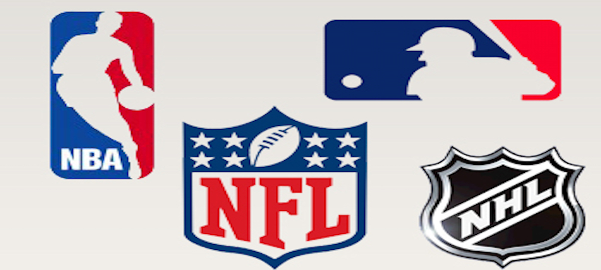
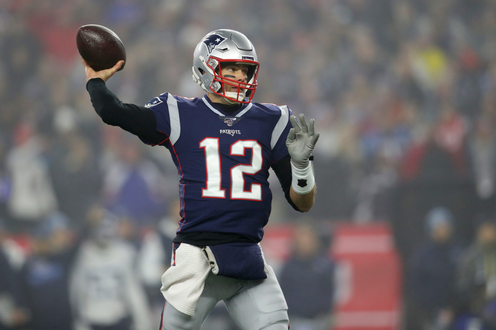
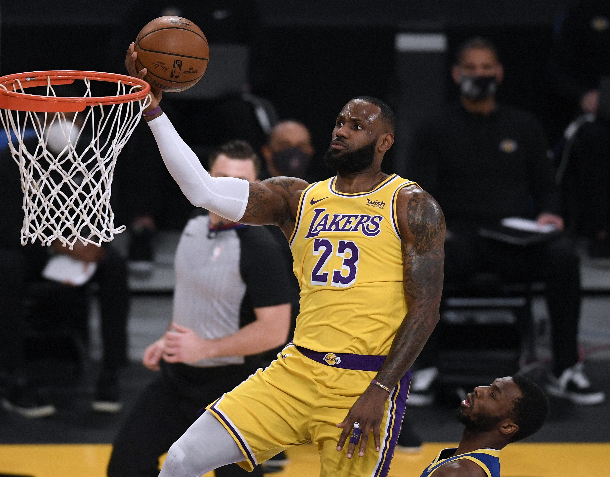
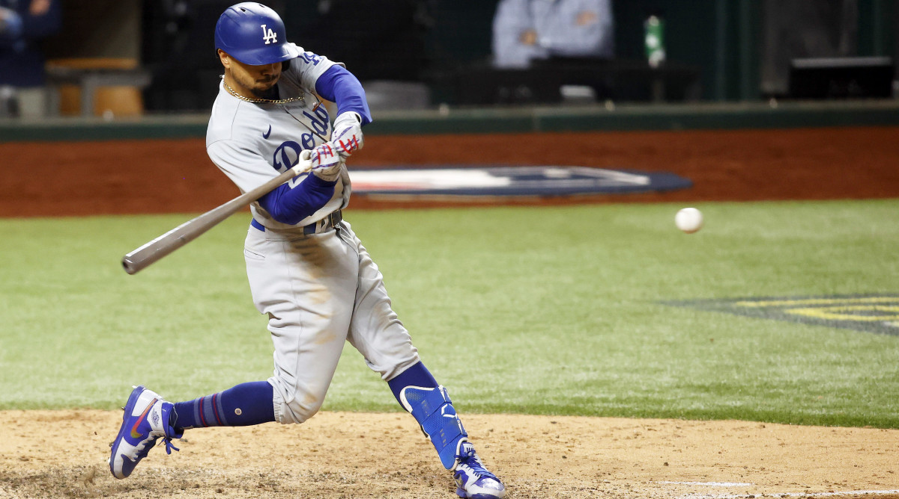

American Sports

Sports in the United States is an important part of culture in the United States. American football is the most popular
sport to watch in the United States, followed by baseball, basketball, ice hockey and soccer, which make up the "5 major sports".
Based on Olympic Games, World Championships, and other major competitions in respective sports, the United States is one of the
most successful sports nations in the world.
Based on revenue, the four major professional sports leagues in the United States are Major League Baseball (MLB),
the National Basketball Association (NBA), the National Football League (NFL), and the National Hockey League (NHL). The market
for professional sports in the United States is roughly $69 billion, roughly 50% larger than that of all of Europe, the Middle East,
and Africa combined.
Sports are particularly associated with education in the United States, with most high schools and universities having organized
sports, and this is a unique sporting footprint for the U.S. College sports competitions play an important role in the American
sporting culture, and college basketball and college football are as popular as professional sports in some parts of the country.
The NFL

The National Football League (NFL) is a professional American football league consisting of 32 teams, divided equally between
the National Football Conference (NFC) and the American Football Conference (AFC). The NFL is one of the four major North American
professional sports leagues, the highest professional level of American football in the world. The NFL's 18-week regular season runs
from early September to early January, with each team playing 17 games and having one bye week. Following the conclusion of the regular
season, seven teams from each conference (four division winners and three wild card teams) advance to the playoffs, a single-elimination
tournament culminating in the Super Bowl, which is usually held on the second Sunday in February.
The NFL has the highest average attendance (67,591) of any professional sports league in the world and is the most popular sports league in
the United States. The Super Bowl is also among the biggest club sporting events in the world, with the individual games accounting for many
of the most watched television programs in American history. The NFL is the wealthiest professional sports league by revenue, and the sports
league with the most valuable teams.
The NBA

The National Basketball Association (NBA) is a professional basketball league in North America. The league is composed of 30 teams (29 in the United States and 1 in Canada) and
is one of the four major professional sports leagues in the United States and Canada. It is the premier men's professional basketball league in the world. The league was
founded in New York City on June 6, 1946, as the Basketball Association of America (BAA). It changed its name to the National Basketball Association on August 3, 1949,
after merging with the competing National Basketball League (NBL). The NBA's regular season runs from October to April, with each team playing 82 games.
The league's playoff tournament extends into June. As of 2020, NBA players are the world's best paid athletes by average annual salary per player.
The NBA Finals is the annual championship series of the National Basketball Association (NBA). The Eastern and Western conference champions play a best-of-seven game series
to determine the league champion. The team that wins the series is awarded the Larry O'Brien Championship Trophy, which replaced the Walter A. Brown Trophy in 1983.
A total of 19 franchises have won the NBA Finals, with the Los Angeles Lakers winning in 2020. The Lakers and the Boston Celtics hold the record for the most victories,
having both won the competition 17 times.
MBL

Major League Baseball (MLB) is an American professional baseball organization and the oldest of the major professional sports leagues in the United States and Canada.
A total of 30 teams play in Major League Baseball: 15 teams in the National League (NL) and 15 in the American League (AL). The NL and AL were formed in 1876 and 1901,
respectively. Beginning in 1903, the two leagues cooperated but remained legally separate entities until 2000 when they merged into a single organization.
Today, MLB is composed of 30 teams: 29 in the United States and 1 in Canada. Teams play 162 games each season and five teams in each league advance to a
four-round postseason tournament that culminates in the World Series, a best-of-seven championship series between the two league champions that dates to 1903.
MLB has the highest total season attendance of any sports league in the world with more than 69.6 million spectators in 2018. MLB also oversees Minor League Baseball,
which comprises lower-tier teams affiliated with the major league clubs. MLB is the second-wealthiest professional sport league by revenue after the National Football League (NFL).
The NHL
The National Hockey League (NHL) is a professional ice hockey league in North America, currently comprising 31 teams: 24 in the United States and
7 in Canada. The NHL is considered to be the premier professional ice hockey league in the world, and is one of the major professional sports leagues
in the United States and Canada. The Stanley Cup, the oldest professional sports trophy in North America, is awarded annually to the league playoff
champion at the end of each season. The National Hockey League was organized on November 26, 1917, at the Windsor Hotel in Montreal, after the suspension of operations
of its predecessor organization, the National Hockey Association (NHA), which had been founded in 1909 in Renfrew, Ontario. At its inception, the NHL had four teams—all
in Canada, thus the adjective "National" in the league's name. The league expanded to the United States in 1924, when the Boston Bruins joined, and has since consisted
of American and Canadian teams. The NHL draws many highly skilled players from all over the world and currently has players from approximately 20 countries.
Canadians have historically constituted the majority of the players in the league, with an increasing percentage of American and European players in recent seasons.
By Elijah Aluko